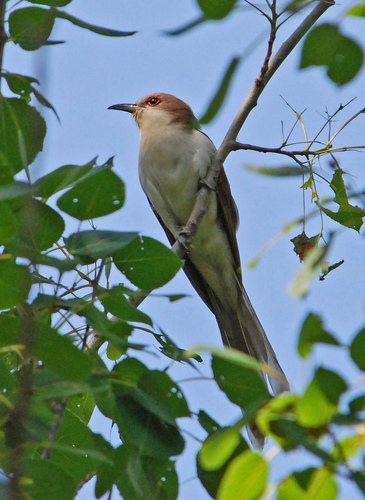

Black-billed Cuckoo

¡Descubre al fascinante Black-billed Cuckoo!
- ¡Bienvenido al mundo del Black-billed Cuckoo, un ave única con un canto distintivo!
- Su nombre científico es Coccyzus erythropthalmus, pero puedes llamarlos "Black-billed Cuckoos". ¡Un nombre interesante, verdad?
- Los Black-billed Cuckoos tienen un plumaje discreto, ¡pero su canto agudo resuena en los bosques como un reloj de cuco! 🎵🐦
- Aunque no son nativos de las Islas Galápagos, podrían aparecer durante sus migraciones, así que mantén los oídos atentos durante tu exploración.
- ¡Curiosidad! A pesar de su apariencia reservada, estos cócteles son excelentes depredadores de insectos, ayudando a equilibrar el ecosistema.
- Es importante preservar los hábitats boscosos para que estas aves sigan siendo parte de la sinfonía natural. ¡Espero que disfrutes aprendiendo sobre el Black-billed Cuckoo!
¡Descubre al Black-billed Cuckoo!
- ¡Bienvenido al mundo del Black-billed Cuckoo, un ave única con un canto distintivo!
- Nombre Científico: Coccyzus erythropthalmus (Black-billed Cuckoo)
- Los Black-billed Cuckoos pueden no destacar por su plumaje, ¡pero su canto agudo llena los bosques con un sonido encantador!
- Estado de Conservación: Preocupación Menor, pero es crucial preservar los bosques donde prosperan.
- ¿Dónde verlos? Aunque no son nativos de las Islas Galápagos, podrían aparecer durante sus migraciones, especialmente en áreas con vegetación densa.
- ¡Curiosidad turística! Estos cócteles no solo tienen un canto distintivo, sino que también son depredadores de insectos expertos, contribuyendo al equilibrio ecológico.
- Recuerda ser respetuoso con el entorno y mantener la distancia para permitir que estas aves continúen desempeñando su papel en la naturaleza. ¡Disfruta tu encuentro con el Black-billed Cuckoo!
Información para biólogos:
- Nombre Científico: Coccyzus erythropthalmus (Black-billed Cuckoo)
- Estado de Conservación: Preocupación Menor
- Distribución Geográfica: Amplia distribución en América del Norte, migratorio; no nativo de las Islas Galápagos
- Hábitat: Bosques, áreas con vegetación densa
- Origen: No nativo de las Islas Galápagos; migratorio y ocasionalmente avistado durante migraciones
- Presencia en el Hábitat: Puede avistarse ocasionalmente durante migraciones
- Dieta: Principalmente insectos, especialmente orugas
- Peso: Alrededor de 57 g (puede variar según la región)
- Nidificación: Construyen nidos de ramitas en arbustos o árboles
- Migración: Viajan largas distancias entre sus áreas de reproducción y alimentación
- Canto: Distintivo, similar al sonido de un cuco
- Nombres Relacionados: Rain Crow, Red-eyed Cuckoo